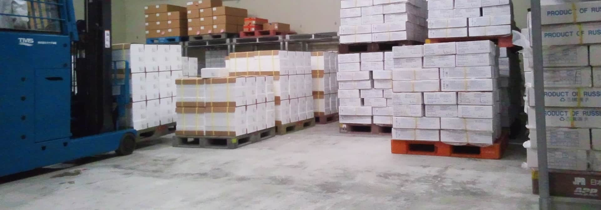
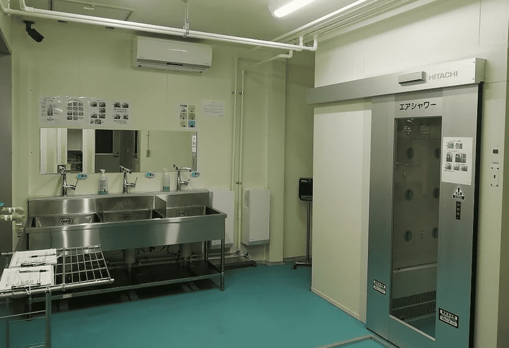
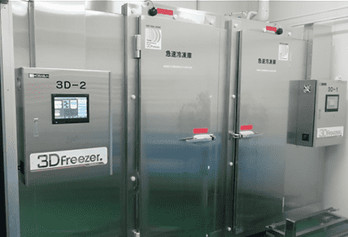
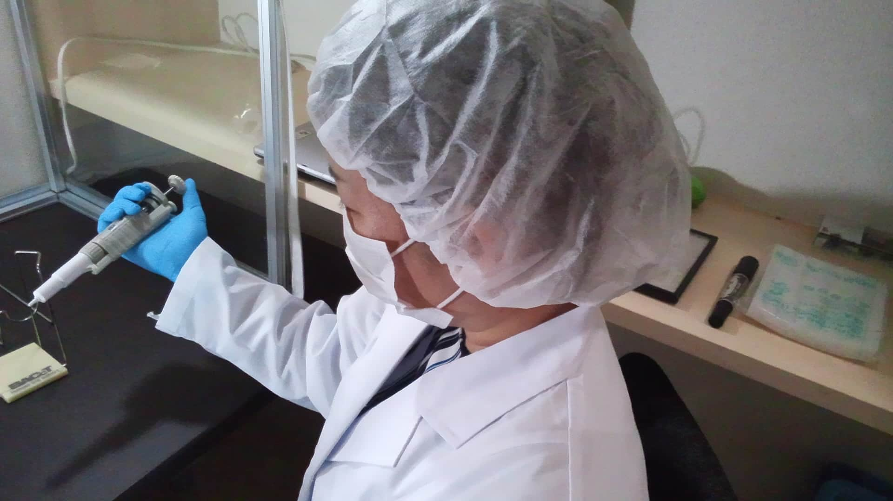
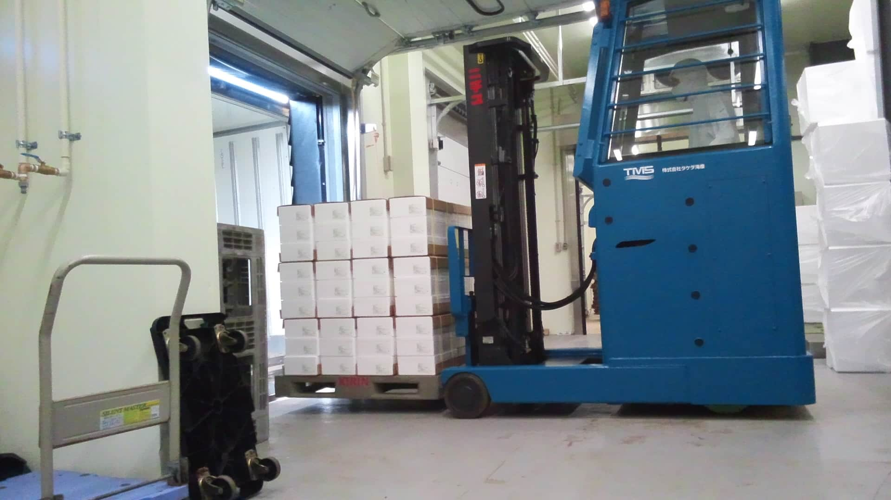

工場の紹介
衛生
5S(整理・整頓・清掃・清潔・躾 (教育))を徹底し原料入荷・製造出荷のすべての工程において、衛生的で効率的な作業環境を維持します。

技術
熟練した技術力で、検品・選別・ 箱詰め・凍結・梱包に至る製造を一貫して行っております。
急速冷凍機（3Dフリーザー）2機を稼働し、安定した品質で商品をお届け致します。

安全
全数金属検査を実施し、安心安全な商品をお届け致します。
安心安全な商品をお届けできるように細菌の自主検査を実施しております。

施設
集中温度監視システムで徹底した温度管理を行い、出荷までの間、自社冷凍庫で大事な商品をお預かり致します。
自社冷凍庫直結の入出庫ホームで原料入庫・商品出庫の際も品質保持を確保致します。
